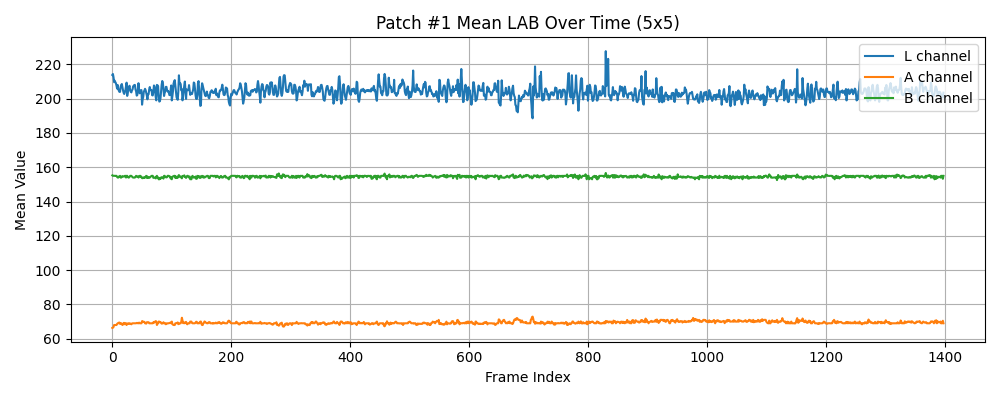
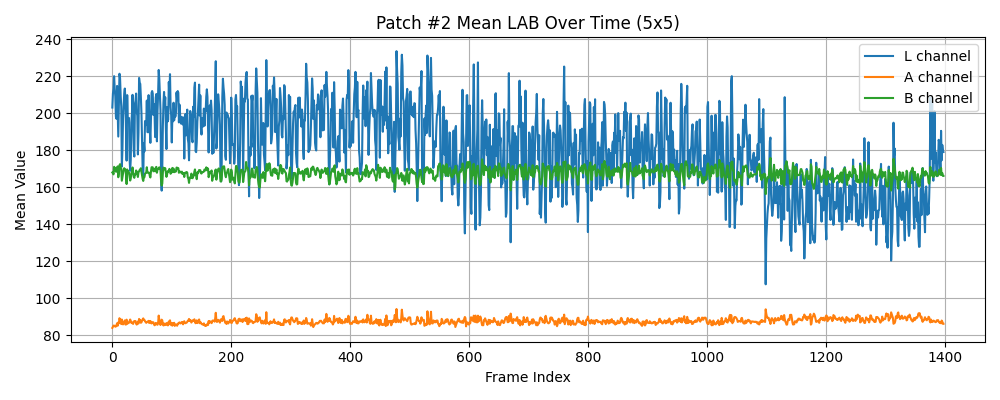
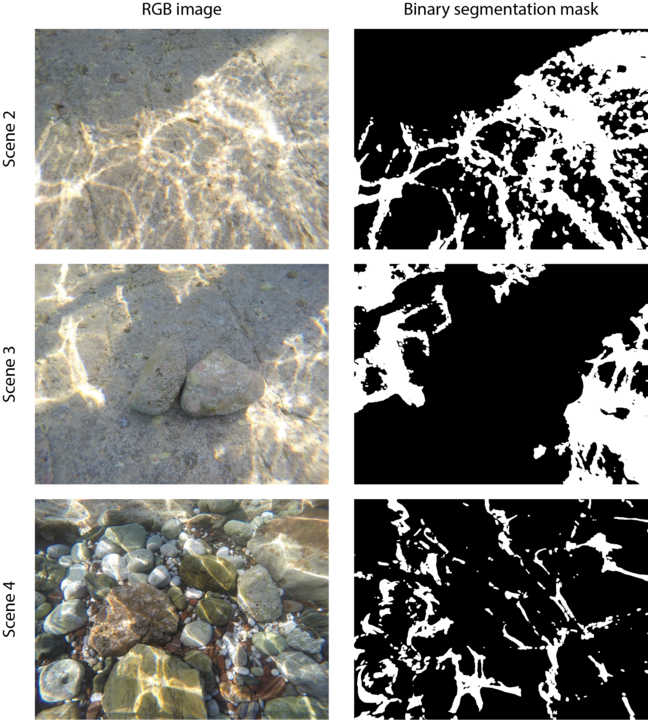
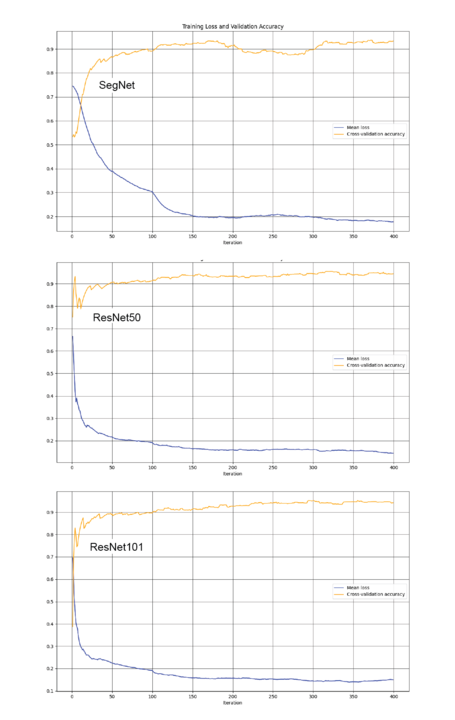
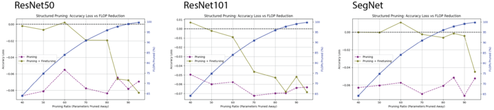

RGB v. LAB - Caustics Variation
The proposed hypothesis was that in a single-pose RGB video of an undersea scene with caustics,
when converted to the CIELAB color scheme (also known as LAB),
the only variation would occur in the L (lightness) channel.
After running several tests on random points and patches over time, the hypothesis was confirmed:
the L-channel showed temporal variation, while A and B channels remained largely static.
This observation led us to explore suppression methods targeting the L-channel,
beginning with the simplest (temporal median filtering), and then extending into more sophisticated techniques
with steerable Gaussian filters. The following figures illustrate two example outputs of the results of our analysis.

Figure 1: Tracked CIELAB Values for Random Patch 1

Figure 2: Tracked CIELAB Values for Random Patch 2
Important Caveat: Caustics are not the only contributors to L-channel variation.
Other phenomena—such as backscattering and marine life entering the scene—also alter lightness and must be considered.
Part 2: Caustics Reduction Model Pruning
Motivation
An early work on caustics removal in underwater images treated caustics identification as a sematic segmentation task, in which a deep neural network can be trained to perform pixel-wise identification of seafloor regions affected by caustics [1]. With an output segmentation mask, caustics can then be removed from the image by transferring color values from pixels unaffected by caustics in matched images of the same scene. To this end, images of seven different underwater scenes featuring caustics were collected, along with corresponding images where the caustics were removed by artificially blocking the sunlight above the water. These images were used to produce (binary) ground truth segmentation masks by taking the difference of the scene images with and without caustics and binarizing the result. The segmentation masks can then serve as training labels for supervised learning of caustics patterns. The results were published as the R-CAUSTICS dataset [1]. Figure 1 shows three examples of scenes and the corresponding ground truth caustics masks. Several scenes from this dataset also feature stereo images for SfM pipeline testing. We used this dataset as a starting point for developing a lightweight, deep learning-based approach to caustics identification.

Figure 1: Examples images and ground truth caustics patterns from scenes 2, 3 and 7 of the R-CAUSTICS dataset.
Training Setup
The authors of the [1] trained six different fully-convolutional network (FCN) models across several different test-training splits of R-CAUSTICS. Model performance was quantified by the F1 score for caustics and non-caustics pixels respectively, as well as the total accuracy (percentage of pixels correctly classified). Based on the variety of the given scenes, they determined that training the model on subsets 3, 4, 5, 6 and 7 and testing it on subsets 1 and 2 was optimal, and we adopted this test-training split as well. In this dataset split, the performances of the six FCN models were more-or-less similar, with an F1 classification score of about 82% for caustic pixels and about 97% for non-caustic pixels, with total classification accuracies of about 95%. In the R-CAUSTICS images there are typically many more non-caustic pixels than caustic pixels, hence the total accuracy being close to the non-caustic prediction accuracy.
The trained model weights from the original work were not made publicly available, so we had to re-train the models ourselves before exploring model compression techniques to reduce the model sizes. We chose to focus on the FCN-ResNet50, FCN-ResNet101, and SegNet models with the expectation that while their performances may be similar prior to model compression, the differences in their architectures could make for an interesting contrast after compression. For model training and evaluation, we used a laptop with an NVIDIA GeForce RTX 4050 GPU. Due to memory limitations, we trained the models with a batch size of 40 (rather than 60 as in the original paper), a shorter epoch length (1,000 image patches rather than 10,000) and over a limited subset of 180 images from the aforementioned R-CAUSTICS subset. Otherwise, we used the same training schedule (e.g. learning rate, momentum and weight decay). Training curves showing the cross-entropy loss and cross-validation accuracy (percentage of correctly-classified pixels) for our conditions are shown in Figure 2.

Figure 2: Training loss and cross-validation accuracy for training the three selected FCN models over R-CAUSTICS subsets 3, 4, 5, 6 and 7.
Model Pruning & Quantization
Having trained several deep neural networks for caustics identification, we return to our original goal of developing a lightweight model for caustics identification and removal. To that end, we explored two approaches to compressing the models we trained: pruning and quantization. Pruning removes weights from network layers, while quantization reduces the numerical precision of the model parameters and activations. Pruning and quantization are commonly used to together to reduce the model size and inference cost of deep neural networks.
We considered both unstructured pruning and channel-wise structured pruning. Unstructured pruning, in which the weights with the smallest individual magnitudes are zeroed-out, is particularly easy to implement using standard PyTorch libraries and can reduce the total model size by eliminating parameters. However, unstructured pruning typically does not improve inference time in practice without specialized hardware and frameworks for handling sparse arrays, as standard hardware and libraries continue treat data and models as dense arrays, albeit with many zero elements. In contrast, channel-wise pruning ranks entire channels by their importance (e.g. by the L2- norm of the set of weights corresponding to that channel) and prunes the channels with the smallest importance scores. This leads to smaller tensors and fewer FLOPs at the trade-off of reduced model accuracy due to the more aggressive pruning strategy. In the end, we chose to implement channel-wise pruning, as it is more likely to lead a meaningful improvement in inference time.
First, we pruned the ResNet50 and ResNet101 models that we trained earlier. ResNet50 and ResNet101 both consist of a series of “bottleneck” blocks comprised by 1x1 and 3x3 convolution layers separated by BatchNorm layers and ending in ReLU activation functions. Compared to ResNet50, ResNet101 contains 17 additional bottleneck blocks, which results in 61 layers in total. ResNet50 and ResNet101 make for a useful comparison of pruning effectiveness because overparametrized models are often able to find a better global optimum during initial training while retaining some of the additional accuracy after pruning. In contrast to the ResNet models, SegNet is a simpler encoder-decoder architecture based on VGG16. We measured the parameter numbers and FLOPs for each of these models prior to pruning, which are summarized in Table 1.
|
FCN-ResNet50 |
FCN-ResNet101 |
SegNet |
| Parameters |
32.9 |
51.9 |
29.4 |
| GFLOPs |
53.2 |
83.0 |
61.4 |
Table 1: Parameters and FLOP operations associated with selected FCN models prior to pruning
In order to study how lightweight the resulting models could be made, we pruned each of the models with a variable pruning ratio, ranging from 0.5 to 0.95. The pruning ratio was applied globally, rather than per-layer, for a more aggressive pruning. Note that the final convolutional layer was eligible for pruning, as that would affect the number of classes in the semantic segmentation task (here, 2). After pruning, we finetuned the models for 3 epochs on the test set. The training accuracy loss and percentage of FLOPs pruned are plotted for ResNet50, ResNet101, and SegNet in Figure 3.

Figure 3: Accuracy loss and FLOPs pruned as a function of pruning ratio for the three selected models. The purple curve and yellow curve show the accuracy loss after pruning and after pruning plus finetuning, respectively.
Observations
The loss of accuracy upon initial pruning is fairly constant across models and pruning ratios, and the accuracy of all models is mostly recovered by fine-tuning for moderate (40-60%) pruning ratios. There are also several instances in which the accuracy slightly increases above the baseline after finetuning, which could be attributable to the “lottery ticket hypothesis,” in which pruning isolates a more effective subnetwork [2]. Alternatively, the occasional improvement in accuracy above the baseline could be due to the regularization effect of pruning and retraining, which can help the model escape sharp local minima.
Interestingly, the post-finetuning accuracy loss is generally worse for the ResNet101 model than for the ResNet50 model, in contrast to our hypothesis that many of weights in the more heavily-overparameterized model are redundant. This can potentially be explained by considering the structures of the two models. In particular, ResNet101 is a deeper model than ResNet50 but has the same width (number of channels). Channel-wise pruning reduces the width of the convolutional layers but leaves the depth unchanged, and in a deeper network, the effect of pruning early layers propagates further downstream, making the deeper model (ResNet101) potentially more sensitive to pruning.
Among the three models, SegNet is the most robust to channel-wise pruning. Remarkably, we find that over 95% of parameters can be pruned while an incurring an accuracy loss of less than 5%. This robustness to pruning can also potentially be explained by the model architecture. Unlike the ResNet models, SegNet does not feature residual connections, which force strict alignment of shapes and make pruning less flexible. The increased flexibility allows for greater independence between layers, enabling more aggressive pruning without disrupting downstream representations.
The two approaches we considered for quantizing the models were QAT and dynamic quantization. [[dynamic quantization gives no savings for convolutional layers]] [[QAT not compatible with off-the-shelf ResNet models – or, at-least, it requires fusing layers…]] [[in QAT, we fine-tune on the test data]]
[[definitely show some visuals of the pruned/quantized models applied to real images!]]
[[must measure inference time…]]
Outlook
In the future, it could be valuable to study whether ViTs can outperform CNNs for caustics segmentation, as caustics often span large spatial extents and ViTs excel in modeling long-range dependencies. While ViTs typically require more memory and compute, they could also be amenable to pruning. [[also about self-supervised approaches that we didn’t get around to trying…]]
Bibliography
[1] P. Agrafiotis, K. Karantzalos, IEEE 2023.
[2] Sauder & Tuia, ECCV 2024.
[3] Forbes et al., IEEE J. Ocean. Eng., 2019.
[4] Agrafiotis et al., IEEE J. Ocean. Eng., 2023.
[5] Zhang et al., IEEE RAL, 2024.
[6] Hernandez & Brown, arXiv:2005.04305.
[7] Agrafiotis et al., IEEE J. Ocean. Eng., 2023 (R-CAUSTIC dataset).
[8] Freeman & Adelson, IEEE PAMI, 1991.
[9] Treiber et al., IEEE PAMI, 2009.
[10] Zhang et al., arXiv:2305.04305.